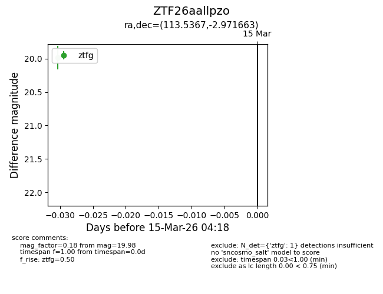
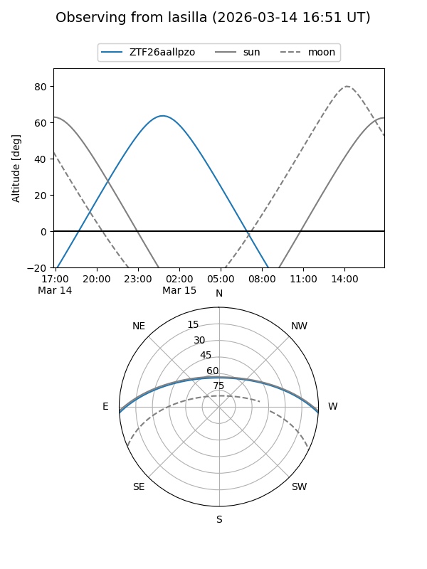
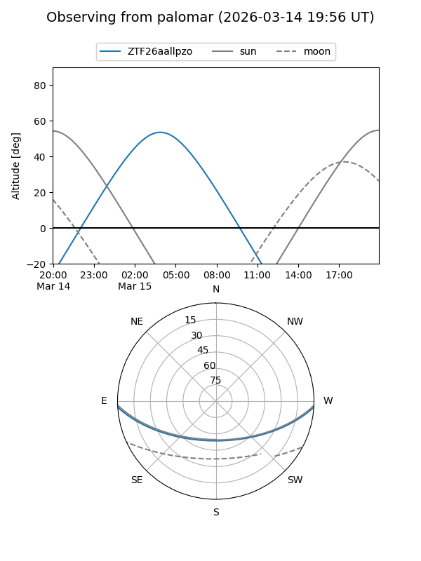

ZTF26aallpzo
Target ZTF26aallpzo at 2026-03-15 04:20
Aliases and brokers:
FINK: link
Lasair: link
ALeRCE: link
alt names
ZTF26aallpzo (ztf,fink_ztf)
Coordinates:
equatorial (ra, dec) = 113.5367,-2.97166
equatorial (HMS+DMS) = 07:34:08.80,-02:58:17.99
galactic (l, b) = (220.5070,+8.10757)
Flags:
Photometry:
last ztfg=19.98
1 ztfg detections
Lightcurve

Visibility


Additional plots